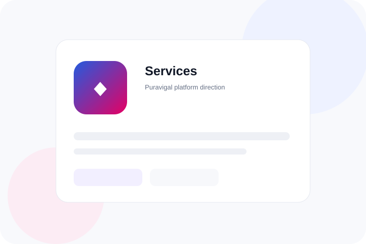
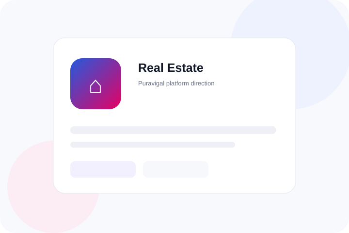
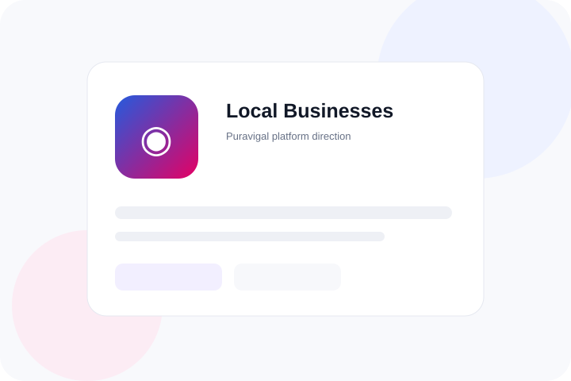

Platform direction
Retail
Everyday commerce, products, inventory and customer sales.
Puravigal is being designed around real business workflows. Different industries have different problems, so the platform can adapt without losing its simple foundation.
These are the areas Puravigal is exploring as the product suite grows. Availability depends on the product and release stage.
Everyday commerce, products, inventory and customer sales.

Ordering, billing, service workflows and day-to-day operations.

Appointments, customers, invoices and service operations.
Structured workflows for financial businesses and professional operations.

Leads, properties, customers and operational follow-up workflows.

Practical digital tools for businesses serving their local customers.
Puravigal POS is being built for shops and everyday product businesses.
Dedicated POS workflows are being shaped for food businesses.
Other business areas will become part of the platform only when the right product workflows are ready.
Tell us what your workflow looks like.